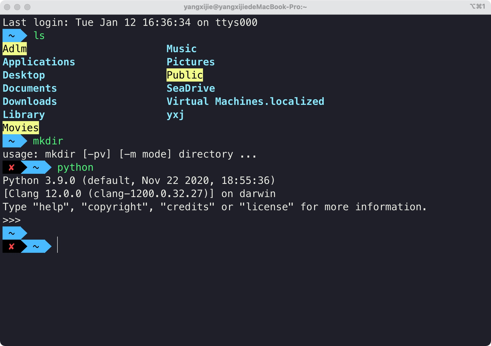
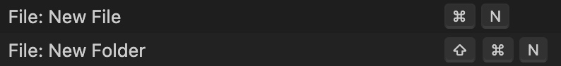
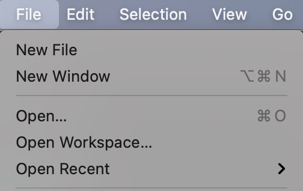
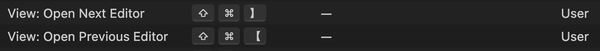
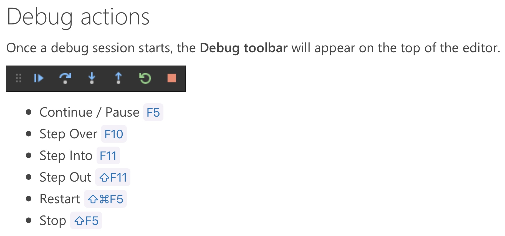

Introduction of Me and My Site
点击左上角的图标打开切换菜单
Click icon at the top left corner of this site to switch to other parts.
My Accounts / 我的个人账号
在macOS上用VS Code写C++代码
简介
系列教程——如何在macOS上使用VS Code优雅的写C++代码。
点击页面左上角的图标可以切换页面查看此课程的讲稿。
点击下方的链接跳转Bilibili视频教程。
交流讨论与反馈可以到GitHub的Discussions板块
帮助我修改此讲稿可以跳转到此网站的GitHub repo
在Bilibili查看视频教程
注：所有视频录制及上传分辨率均为3360x2100，如果观看时感到视频模糊，请调整画质到4K 超清；由于视频比例为16:10，建议使用相同比例的显示器全屏播放以获得最佳观看体验。
附
很用心做的一期教程，因为觉得很有这么做的必要！做这份教程的原因我在第一课和第八课都有提到～
说实话，录教程真的 太 累 了。1倍时间的视频，构思大概会花掉2倍，写讲稿和上传讲稿、修改讲稿大概花5倍时间，录制一般花1倍时间（但是紧张的时候差不多就得1.5倍），倒入FCPX检查一遍大概1.5倍时间，导出和上传视频、写简介、写评论加起来平均花掉3倍时间；整个算下来差不多是12.5倍的时间。希望这么做是值得的，希望能帮到大家！
如果大家觉得有帮助，还请把这份教程推荐给身边的同学哦！
想对使用Windows的同学说的话
之前提到“应该”会出一个Windows版，但是做完这份教程觉得，做教程太花时间了，我大概是没有经历再出一份相同思路的Windows版教程；另外，我对Windows系统可能也没有那么熟悉，做出来的教程质量很难保证。如果可以，我非常希望有熟悉Windows的同学出一份相应的视频教程，帮助大一新入学的同学们配置好属于自己的C++编程环境。
另外，即使你在使用Windows系统，也可以通过我的这份教程从思路上了解配置的过程，让你的环境配置更顺利（也许）！
1 前言 和 课程说明
前言
大家好，我是杨希杰。今天给大家带来的是在mac上用VS Code写C++代码的教程
背景
不少工科的同学进入大一 会学习程序设计，最开始接触的语言一般都是C/C++
不过呢，老师往往会以Windows系统为例说明如何写代码（毕竟目前使用mac的用户是小群体），这对使用苹果电脑也就是mac的同学是不很友好的
而且有些老师在编程环境的配置、编辑器的选取上也会有一些忽略，这部分的内容往往让同学们自学；而网上的博客或教程良莠不齐，好不容易找到能用的配置，也只是复制粘贴不知道里面写了什么
更何况有些同学拿着mac但是完全是个电脑小白，甚至连苹果电脑的基本操作都不太熟悉
这时要开始编程真是难上加难
我的情况
对，以上情况说的就是我。我在高考之前几乎没有怎么用过电脑，就是说连Windows电脑都不怎么会用。大一开始程设课老师完全没有提过mac的事情，推荐我们用Windows平台的Visual Studio很老的一个版本进行编程学习。我当时安装了虚拟机，因为存储原因又换了Visual Studio Code，配置文件让我头大。学了一年共5学分的程设课之后，直到20年的暑假，也就是我大一的暑假，我加入科协软件部，参加了一些额外的培训之后，我才发现，编程环境这件事情，没有那么困难。
我逐渐发现，只要清楚原理，从最基础的开始了解，在mac上用VS Code编程是一件轻松愉快的事情，而我一直都在走弯路。抱着不希望学弟学妹绕弯路的想法，我计划出一份在mac上用VS Code写优雅的写C++代码的教程。
课程目标
我希望我的课程能达到：让刚刚入学的使用mac学习C++编程的同学看到之后，能够快速上手VS Code愉快轻松地开始程序设计课的学习
或者说：如果一年前的我看到这次制作的教程，能让我少一年在程设上的迷茫。
课程简介
- 我将从
mac的文件系统讲起，提及程序、可执行文件的概念，从零开始使用终端命令加深对程序的理解； - 在大家有了对程序的理解和基本终端操作的技能之后，我会开始编写简单的
C++代码，并演示如何将其编译为可执行文件/程序； - 进而引入
macOS轻量的编辑器VS Code，整合之前所讲的文件系统/文件目录、终端使用、编程与代码编译的过程 - 进一步引入
VS Code的插件（Code Runner）以及VS Code的配置文件（settings.json）快速编译和执行代码文件（.cpp） - 插入介绍
VS Code的一些便捷操作 - 介绍
VS Code的调试（debug）功能
辅助操作
介绍我的电脑情况。这是一台全新的MacBook Pro，搭载Big Sur最新11.1的macOS、也就是苹果电脑操作系统。
至于为什么要用一台全新的电脑，这是因为自己的电脑用了一年多，和你手上的电脑会有很多有差别的地方。至少用一台新的电脑会尽可能地消除这些差异吧。
至于我从哪里来的一台全新的MacBook Pro，emmm，并不是买的，是在外置SSD中另装的系统。如果你不知道可以这么搞，那你就当我没说过，认为这是一台刚买的mbp就好了。
我还安装了一些辅助教程录制的软件、也调整了少量的系统偏好设置，希望这些方法能让这份教程的效果更好。
总结
我的课程会从最基础的开始讲，因此花费的时间会很长。但是相信我，跟着这份教程走下去，你会获得对mac、对macOS、对程序编译、运行、调试等一系列繁琐事情的清晰认识。好了，前面要说的话就这么多，让我们开始。
下面是第一节课，认识mac的文件系统
Tips
如果在接下来看课程的过程中对mac的一些操作有不理解或不熟悉的地方，可以看看B站up主Mac云课堂制作上传的超良心mac教程，可能看了那些视频你会发现mac就是你手边的生产力。
2 认识mac的文件系统
文件是什么呢？（展示下载文件夹中的图片，视频，txt，word等）
就是存储在硬盘里面的一些东西
如何更方便的看到这些文件从而对文件系统有一个更清晰的认识呢？
首先我们需要对mac的文件管理器——访达进行一些设置
对访达进行设置

打开Show all filename extensions

打开Hard disks从而看到挂载的磁盘（看一下）
打开你的家目录（一个房子的图标，我的是yangxijie）从而看到家目录
继续调整访达

⌘2：按照列表查看
⌥⌘S：打开边栏
⌥⌘T：打开工具栏
⌥⌘P：打开显示路径
⌘/：打开状态栏
观察根目录
什么是根目录？所有的文件和文件夹都存在根目录下。这里根目录就是你的内置硬盘
调整上面的显示项目
（分别解释每个文件夹的用处）
Applications：你安装的应用程序都在这个文件夹
Library：用来存应用程序的一些数据。比如微信的聊天记录就在这个里面哦
System：一些系统（macOS）的文件，没事儿别乱碰就好了
User：（打开系统偏好设置，查看用户）个人的文件就在这里
隐藏文件
⇧⌘. ：显示隐藏文件
)
点开头的文件夹和文件会被隐藏。这是因为有些文件可能比较繁琐或者对用户来说完全没有用处，或者可能对其进行操作比较危险，所以创建这个文件/文件夹的时候就带上了.将其隐藏不让用户看到。
但是也有一些不是点开头的文件或者文件夹被隐藏。那么为什么这些文件会被隐藏呢？因为系统不希望一般的使用者碰这些文件。因为可能你随手删掉一个系统就崩了。emmm，崩了就是说，电脑死机或者坏掉什么的。所以不要随便乱动。
不过我们待会儿要用，所以就简单看看吧。
主要是/bin目录。存放系统关键的二进制文件（什么是二进制文件我下节课会讲）（大家记住这里有个date就好了）
观察家目录

其实你的边栏（打开访达设置）显示的就是这里的文件夹（没什么神秘的，与别的文件夹没有任何区别）
路径
根目录/ == Macintosh HD
家目录~ == /Users/yangxijie（你的用户名）
树状分级
（试着写出路径）
文件名后缀的说明
文件名后缀是文件名的一部分
文件名后缀只是为了告诉系统该程序默认由哪个应用程序来打开（txt 文本编辑，jpg 预览，mp4 QuickTime Player）
你也可以不写后缀，但是这样系统就不知道要用哪些程序去打开/要如何打开。所以一定要写好后缀哦（但是后面会说到两种文件：二进制可执行文件和文本文件一般是不写后缀名的）
3 认识程序
二进制可执行文件和文本文件
这两种文件可以说是文件系统最基本的两种文件了
它们有什么不同呢？
计算机存储，本质都是0和1存储。我们先说文本文件吧：
文本文件：存的是字符，一个接一个的字符。每个字符都有一串0、1构成的编码。打开文本文件的时候，系统将这些编码挨个读出来就成为了文本文件。
什么是程序/二进制可执行文件
1 从汉语的概念来说：程序就是按照一定过程执行的东西
2 从用户使用/程序自身的性质的角度来说：（我的理解）input输入，output输出。在计算机里面：有输入、有输出就算程序。
参数是特殊的输入
执行某种操作是特殊的输出
举例子：（先说一下输入与输出的特点）
大家经常使用的可能是有图形界面的应用程序，也就是在应用程序文件夹中的后缀为.app的程序。我们先从这些大家熟悉的app入手，之后再说大家可能很少接触的二进制可执行文件

以备忘录为例：
键盘敲了一些字，屏幕上就显示了一行字（输入：敲键盘；输出：备忘录中多了一行字）
鼠标点击，在光标移动（输入：鼠标点击；输出：光标移动）
右键点击，出现辅助菜单（输入：带参数⌃的鼠标点击；输出：出现菜单）
点击新建一个列表，计算机就执行了新建一个列表的操作，新建了一个列表（输入：点击某个按钮/图标；输出：执行某个操作）
段落总结
我们简单总结一下：从使用的角度来看，有输入有输出就可以算作是一个程序。大家日常接触的就是在应用程序文件夹中的程序。输入会有普通的输入（点击），也有带参数的输入（右键，⌃点击）；输出有普通的输出（出现了一行字，显示了什么画面），也有特殊的输出——执行了某种操作
接下来我们要认识一些大家平常很少见的程序：二进制可执行文件。
3 从计算机底层的角度来说：程序就是一堆机器码（0、1），就是二进制可执行文件，计算机底层硬件（处理器）可以读取这些机器码然后实现相应的计算/进行相应的处理
引入终端
要跟这些程序/二进制可执行文件打交道，我们首先需要入门一下终端.app。从启动台打开（相当于在访达中找到终端.app然后双击打开）。
终端也是程序（接受你的字符串（命令）为输入，也会有一些输出），我们通过终端与一些没有图形界面的程序进行交互。
但是具体来说，终端提供的是一个输入命令（字符串）和输出提示（字符串）的环境，而shell则负责解析从终端输入的命令。
在计算机科学中，shell俗称壳（用来区别于核），是指“为使用者提供操作界面”的软件（命令解析器）。
它接收用户命令，然后调用相应的应用程序。
这一小节的标题是引入终端，我们这节课只是带大家初步认识终端，下节课我们会对终端和shell做更深入的了解
“它（shell）接收用户命令，然后调用相应的应用程序。”我们接下来就用终端通过shell调用一些没有图形界面的程序（二进制可执行文件），看看它们的输入输出都是什么
自己写的say_hello
（⌘I/空格看到图标上的exec）
（如何告诉shell我们要调用这个程序呢？写出它的路径就好了）
复制路径：右键，⌥；⌥⌘C；拖动到终端
（直观输入+直观输出：字符串）
/bin/date
显示日期
/bin/date
/bin/date "+DATE: %Y-%m-%d%nTIME: %H:%M:%S"
（直观输出，没有输入）
（添加参数）

/bin/mkdir
创建文件夹
接收一个参数/输入：将这个文件夹创建在哪里
在桌面创建newFolder
输出：执行了创建文件夹的操作
附
本节课所用可执行文件say_hello的C++代码文件
#include <cstdio>
int main() {
char name[100];
printf("Please input your name: ");
scanf("%s", name);
printf("Hello, %s", name);
}
4 认识终端和shell
- 4 认识终端和shell
上节课我们已经打开了终端。这节课我们要深入认识终端。
先简单回顾一下：
终端提供的是一个输入命令（字符串）和输出提示（字符串）的环境，而shell则负责解析从终端输入的命令。
内建程序与内建命令
我们打开终端，这时其实相当于打开了shell。上节课我们通过shell运行了一些程序（say_hello /bin/date /bin/mkdir）。其实shell自身也带着一些程序（二进制可执行文件），这些程序就叫内建程序。
shell内建程序的独特之处是，我们在调用这些程序的时候只需要敲一个单词就行了。一个单词，很短，所以我们就把它们称作内建命令。
顺带一提，系统自带的那些程序如果也能用一个单词就调用那么也可以称它们为系统命令。
内建命令有很多，我们只介绍一些比较重要的：which echo history pwd cd
与路径无关
which
查看shell如何解释后面的命令
which which
which echo
which history
which pwd
which cd
得到结果：which: shell built-in command
echo
将后面输入的东西返回。看起来很没用，但是在显示变量的时候会显示变量的值而不是那个字符串
echo hello
echo $SHELL
查看正在使用的shell echo $SHELL。其实还有好多其他的shell，但是我们用macOS默认的shell——zsh就好了。（小知识：在macOS 10.15 Catalina之前macOS默认的shell是bash，其实二者的区别并不大，都可以解析你输入的命令）
history
history
history -5
date
接下来我们尝试一下which date。
发现shell返回了/bin/date！回顾which的作用，which会查看后面输入的东西作为命令如何被shell解析。也就是说，如果你在shell输入date，相当于输入/bin/date。那么我们要看时间怎么看啊，直接输入date，shell就会帮我解析这个单词，然后去调用在文件系统中的/bin/date这一个二进制程序，执行这个程序，然后返回当前的时间。
然后我们灵光一现，那是不是很多系统命令都可以用一个单词调用呢？
是这样的，我举一个例子。which mkdir，发现也是返回我们之前用的/bin/mkdir。那么我们以后用mkdir的时候是不是就不用写路径了，直接写单词就OK。
说明
既然不论是内建命令还是系统命令，都可以用一个单词替代，那么我们之后就不要太区分它们啦，反正都是命令，都是用一个单词告诉shell要调用哪个程序，本质上是一样的。
注：为什么会这样呢？调用程序写完整路径可以调用，但是一个单词给shell、shell就能知道这个程序在哪里？好奇怪啊。原因我会在这节课的最后讲环境变量的时候提及。现在先认为这就是shell的功能好了。
与shell当前工作目录相关
刚刚我们讲内建命令的时候还说了两个命令，pwd和cd。但是刚刚插着讲了shell的一些常用命令于是就跳过了。接下来我们来讲这些命令。
接下来讲的命令的一些不同是命令的输入和执行或多或少会依赖shell的当前工作目录，与文件的路径相关。
pwd
接下来开始介绍文件路径——绝对路径和相对路径
我们之前所说的路径都是绝对路径，也就是从根目录开始。但其实还有相对路径。
pwd
开始介绍shell的当前工作路径
. .. ... - ~
小问题：~/Desktop是相对路径还是绝对路径？（A：绝对路径。因为~和/User/yangxijie是等价的）
（好的习惯是目录后面再加一个斜杠，而文件后面不加（我因为这个吃过亏，但还是懒得改））
cd
跳转shell的当前工作目录到指定的目录
这时我们就可以来验证上面学到的相对路径了
不过我们先试试绝对路径。再来相对路径
（查看命令前面的符号）
之前的程序/Users/yangxijie/Desktop/teaching_materials/say_hello，直接输入say_helloshell会告诉你它不认识这个单词，不认识这个命令
但是要调用这样的程序未免也太长了吧，我们能不能简化一些？
先cd到/Users/yangxijie/Desktop这时里面会有一个可执行文件
直观的想法是say_hello
但是进入目录后直接输入字符串zsh会把这个当作一条命令然后它发现并没有找到这个命令（当然了say_hello不是shell的内建命令环境变量里面也没有它所以当然出现下面的提示了zsh: command not found: say_hello
怎么让shell知道输入的say_hello不是命令而是我们想要执行的程序呢？我们输入./say_hello就好了。相当于写了一个绝对路径对吧（.相当于pwd带入）
总结
以上我们主要学习了两种内建命令：一种与文件系统/路径无关，一种与文件系统/路径有关。但是之后我们也不会去区分这两种命令了。
也就是说，之后命令就是命令，不管那是内建的还是系统的、也不管它和文件系统、路径是否沾边。
之前这么讲是希望大家能有一个较为清晰的思路认识这些命令、认识shell解析命令与执行程序的关系。但是之后在敲命令的不用太过考虑这些东西，命令就是命令，就只是一个单词、只是一句话而已。
shell常用命令
接下来我们还会再介绍一些shell常用的命令和操作。
ls
列出当前文件夹下的所有文件
ls
ls -a
ls -l
cat
cat hello.txt
clear
清空终端中存在的已经执行过的命令
（history仍然可以查看）
mkdir
在当前目录下创建文件夹
touch
在当前目录下创建文件（一般这么创建的文件是文本文件）
rm
移除某个文件（注意不是移动到废纸篓，而是直接抹掉，就 没了）
移除某个文件夹rm -d testDirectory
强制删除rm -rf testDirectory（使用一定慎重！！！）
mv/cp
移动文件与复制文件
移动文件到原地相当于重命名
open
open foo.md
open -a Visual\ Studio\ Code.app foo.md
open $(pwd)
-a参数制定打开的程序（需要使用程序全名）
$(pwd)表示当前目录，open $(pwd)表示用Finder打开shell当前的工作目录
man
以date为例
（有的没有）
--help（但是有的也没有）
shell常用的操作
输出流重定向
还记得echo吗？
touch my.txt
echo "hello world" > my.txt
echo "hhhh" > my.txt
echo "hahahaha" >> my.txt
管道
|: 上一个命令（程序）的输出作为下一个命令的输入
比如我想看看我刚刚创建了什么文件夹来着：我可以一条一条翻，但是我也可以搜索啊！
history
history | grep "mkdir"
⌃C
空格
举例：创建一个含有空格的文件夹，结果发现创建了两个
加入\或""
终端进阶与常用的终端操作
如果大家想对终端、shell、命令行深入了解，可以查看下面的课程：
这是对我帮助很大的一门课程
计算机教育中缺失的一课 The Missing Semester of Your CS Education 中文版
where
where也是一个shell内建命令。where和which的功能差不多，也是告诉我们一个命令如何被shell解析。区别是，shell能够告诉我们shell去解析这个命令的全部可能性。
where which
我们可以看到，其实在shell输入命令which的时候，shell觉得：啊，这个单词有两种方法可以被我解析：第一种是我自己带的内建程序；第二种是系统自带的程序；不过我自己用我自己自带的程序效率更快，毕竟是我自己的东西，所以就用自己的喽。其实，我感觉which就是where的第一行，对吧。
vim极简入门（只要能写东西进去就好了）
（编辑一个文本为例）
推出插入模式并保存退出：⎋ 冒号 wq 回车
⌃D
（bash举例）
chmod
修改文件权限。
如果你希望一个文件有可执行权限：
chmod a+x <file>
（没有深入）
回顾
如果要总结这节课所学的终端、shell与之前课程的联系，那就是把之前很长的命令给简化了。原本调用程序的过程我都扔给shell去做，我敲命令告诉shell干什么就ok了。
比如：
简化前面的命令 之 创建文件夹
/bin/mkdir /Users/yangxijie/Desktop/newFolder这样我们可以先cd过去
前面省略程序路径是因为shell知道你那个单词代表路径为/bin/mkdir的程序，所以我们省略交给shell一个单词就好。
后面为什么可以省略呢？那是因为shell有一个叫当前工作目录的东西，因此很多绝对路径可以用相对路径来代替。我们可以先cd到需要建目录的地方然后敲mkdir newFolder
简化前面的命令 之 执行自己写的程序
之前说shell内建的程序和系统的大多数二进制程序都可以通过命令让shell帮我们执行。但是自己写的程序shell是不认识的
但是你仍然可以切换到相应的目录，然后用./<your_execFile>
补充：环境变量
引言
我们之前采用了几种方法来简化终端敲命令的长度：
最开始说的是：shell认识你给它的命令（单词），所以它就帮你用这个命令（单词）找到你需要执行的程序，然后执行这个程序
后来还讲过一种：因为shell自身有一个当前工作目录，所以关于路径的东西都可以写相对路径。通过cd命令cd到某个目录之后，接下来需要路径的命令都可以省略掉绝对路径而使用相对路径。
第二种的原理已经很清楚。但是，第一种，也就是最先说的那一种，shell是怎么认识我们给它的单词呢？？？
接下来我们简单说一下这个事情。
环境变量
查看环境变量
echo $PATH
其中冒号是分隔符。当你给shell扔了一个命令之后，shell先在自己的内建程序中找有没有这个单词，没找到再到环境变量去找。
（回顾where）
为什么要用环境变量呢？
因为一个相同的程序，在不同的计算机上可能安装在不同的位置。
比如我写了一个python脚本，在脚本的第一行指出了我电脑里面的python路径。然后你看了这个脚本，觉得挺好用的，我就复制了一份给你。结果你的电脑上python并没有装在那里，那不就凉了吗？你执行这个我写的脚本的时候系统就找不到python的解释器于是无法运行这段脚本。
补充：添加环境变量
添加环境变量等（大家可以自己去了解一下，自己写的程序可以这么搞，但一般都不这么搞。不过你要是下个python解释器，这个时候你就要给python的解释器添加环境变量了，因为很多别的软件都会用到python，这些软件希望它们用一个单词python就能找到python的解释器。（在macOS上这件事情交给brew去做，不用你手动添加；但是Windows上可能你就要手动添加环境变量了））
其他的工具
shell脚本 - 组合你的命令
shell脚本（以我写的处理视频的脚本为例：脚本是一段代码，组合了很多命令mkv2mp4_fcp）
homebrew - macOS快速安装命令行程序
homebrew（在哪里下载图形化界面的程序？App Store。那么在哪里下载命令行程序呢？当然是…Homebrew。就是一个名字。我们可以通过Homebrew来安装各种命令行工具并进行使用（补充：brew也可以用来安装一些图形化工具）brew官网）如果有机会我会出后续的教程
zsh配置文件
~/.zshrc
配置终端 - 打造舒适终端
终端配置(（拿我自己的电脑说一下事儿）（给出链接大家自己想配可以配置一下）如何配置很漂亮的终端）
可以参考：
如果有机会我会出后续的教程
用户与群组
用户yxj和sudo root（whoami who等（系统偏好设置的切换用户（不过看我视频教程的人应该都是用自己的mac，所以不会牵扯到这个问题。如果你是Linux服务器管理员，那么可能要设置多个用户了。））
查看所有的shell内建命令
man builtins可以查看shell的所有内建命令

man zshbuiltins可以查看到zsh的所有内建命令。（也可以先man zsh，然后在下方找到这个zshbuiltins）
结束
大家估计听完这四节课都着急了，怎么还没见到VS Code的影子呢？
别急，现在你已经有了足够的基础可以听懂我接下来在讲什么，那我们就开始打开VS Code的大门吧！！！
5 开启VS Code的大门
- 5 开启VS Code的大门
- 用终端写代码
- 认识VS Code
- 简单安装插件
- g++的参数讲解
- VS Code简单的文本编辑技巧
- 代码格式化引入settings.json
- 修改快捷键
- 附：C/C++代码编译过程
- 附：macOS平台上的编译器
（因为这一课内容比较多，可能会分为上下两部分）
用终端写代码
首先我们要写代码，然后将其编译为二进制可执行文件。这样我们的代码就可以在电脑上跑起来。
第一次进行这个操作，我们还是用原始的方法（用终端）来做；之后再用VSCode去简化这个流程
写代码
（我们尽可能用终端和命令来进行操作，逐渐熟练这些东西之后你会发现这比鼠标点击/切换来切换去要快/方便很多）
cd到桌面mkdir Cpp，cd进去
touch``hello.cpp、vim打开编辑（如果你不熟悉vim那还是直接双击用文本编辑器（open hello.cpp（如果open打开了别的应用，⌘I更改设置；或者open hello.cpp -a textedit.app））吧、我这里只是用vim演示一下，和用macOS自带的文本编辑器写是一样的）、保存退出
#include<cstdio>
int main(){
char name[100];
printf("Please input your name: ");
scanf("%s", name);
printf("Hello, %s", name);
}
接下来是把代码文件编译成二进制可执行文件。
g++编译
用什么来编译代码呢？当然是用程序了。/bin/date可以显示当前的时间，/bin/mkdir可以创建一个新的空文件夹；那什么程序能将cpp代码编译为我们想要的二进制可执行文件/程序呢？
g++。是的，这个程序的名字就是g++，它的功能是：将cpp代码编译为二进制可执行文件。
注：不过刚刚一直在说编译，什么是编译？简单来说，你写的后缀为.cpp的文件是文本文件，里面可能还引用了一些头文件（也是代码文件、文本文件）；编译就是将这些东西链接起来，转换为一堆机器码使得电脑硬件可以直接执行。（注：这里说的编译严格一些应该指编译链接；更严格的过程放在本课最后了）
注：如果对编译器不感兴趣，你只需要知道：g++将cpp代码编译为二进制可执行文件 这点就够了。如果你感兴趣，可以看一下这节课讲稿最后的补充资料。
下载必要的命令行工具
那么在哪里下载g++这个程序呢？
苹果的开发集成工具是Xcode.app，其中就带着一堆的命令行工具，那么我们可以直接在App Store下载Xcode.app。不过你打开一看，12G！！太大了吧。如果你不从事苹果平台的软件开发，只是为了一个g++（可能也就1、2MB）下载Xcode这么大的东西占电脑的存储空间，实在划不来。那怎么办呢？
（直接在App Store下载Xcode）
苹果也考虑了这种情况，所以在苹果官方开发者的网站上会有单独的命令行工具的下载。这个大小只有大概400MB，还算比较小（不过其实装好需要2.5G左右的空间，这个确实无法避免啦）

注：其实也可以先尝试g++ --version，然后终端弹出提示说要下载g++。但是由于网络原因，我推荐大家直接安装Command Line Tools，之后在调试Cpp代码的时候也会用到。（在你使用MATLAB的时候也会需要安装Command Line Tools哦，所以现在就装了吧）
第一次编译和执行
安装好后，我们直接编译就好了。可以先执行which g++看看shell怎么解析这条命令，发现返回了一个路径/usr/bin/g++，也就是说，虽然g++这个程序在/usr/bin/g++，但你用一个单词/命令告诉终端终端就会知道你要执行的程序在这里（与环境变量相关，/usr/bin在环境变量中）
编译：执行：
g++ hello_word.cpp
ls发现目录下多了一个a.out文件。这个文件就是我们需要的可执行文件。
接下来执行：绝对路径（拖移、⌥复制路径、⌘⌥C复制路径、根据路径栏自己写路径）；相对路径：不能直接a.out（因为shell觉得这是个命令但是它又不认识），需要./a.out
% ls
hello.cpp
% g++ hello.cpp
% ls
a.out hello.cpp
% a.out
zsh: command not found: a.out
% ./a.out
Please input your name: yxj
Hello, yxj%
给a.out改个名字
给g++添加-o参数
g++ hello.cpp -o hello.out
./hello.out
g++ hello.cpp -o hello
./hello
观察图标，发现系统觉得hello是二进制文件，但是hello.out不是。这就要说到我们之前提到的文件后缀名的事情了。文件的后缀名是文件名的一部分，可有可无，但这个后缀名会告诉系统它用什么应用程序去打开这个文件。双击hello发现系统打开了终端，但是双击hello.out发现系统并不知道怎么打开这个文件（其实这个.out相当于Windows里面的可执行文件.exe）
大家用Cpp代码生成可执行文件的时候，文件名带不带后缀都可以（不带是因为macOS中二进制可执行文件本身就不带后缀）。如果要带，你就用默认的.out，别用别的（举例：你改成exe后缀，用./hello.exe的话，shell也会把这个文件当作二进制可执行文件，但毕竟.exe是Windows系统的可执行文件的后缀，这么用之后可能会造成混淆，所以就用默认的）。
我们在后面对于用g++编译生成的可执行文件都会带上.out后缀，到后面使用VS Code的时候你就知道原因了。推荐大家也将Cpp代码编译出的二进制文件带上.out后缀
这里关于后缀名说的比较多，是因为我发现很多同学都不知道后缀名的含义，总是有同学问我能不能在macOS上直接打开.exe的程序，当然不行，数据的组织方式不一样，两个文件的性质就不一样。能不能直接把.docx后缀的文件直接改成.pdf转成pdf，后缀名决定了系统用什么应用程序打开文件，你改后缀的话只会让另一个应用程序打不开原本的文件；正确的做法是用专门的应用程序去转换文件内部的数据组织方式，而不是直接更改后缀。
吐槽不爽的地方
第一次写代码编译就结束了，大概是：打开终端，写代码，g++编译。整个过程还算简单。
但是有可以吐槽的地方。比如文本编辑器会自动给我大写、文本编辑器没有高亮显示，写代码就真的只是黑白的太难看了、而且我需要不断在终端和文本编辑之间来回切换，这体验确实有点不爽啊。vim的更改保存退出这么复杂……有没有优雅一点的方式呢？？？当然…有！
认识VS Code
那我们就要引出本次教程的主角VS Code了，全名是Visual Studio Code.app。我们在微软VSCode官网直接下载macOS平台的最新版本即可（百度搜索第一条就是）
在下载的时候我们简单介绍一下VS Code。还记得我们刚刚的文本编辑器吗？就是可以用键盘把字符敲上去，然后它给你在屏幕上显示出来的那个应用程序。其实VS Code也就是这样的一款编辑器，但是它提供的东西更多：代码补全、代码提示、代码高亮、自定义设置、插件管理、自动化流程，内置继承终端（Integrated Terminal）、版本控制（Git）、资源管理、调试窗口等。
VS Code的优点
要说VSCode相比于其他的编辑器哪里好：
- 开源（版本迭代快，功能齐全）：开源意味着不是一个团队在开发，而是所有使用者都可以为
VS Code的发展做出一些贡献 - 轻量（250MB左右，比Xcode小太多了）
- 几乎可以用来编写所有语言、甚至可以用来写文档：比如我们接下来就要用
VS Code来写Cpp代码；如果你要学python，那么也可以直接用VS Code；各种脚本……只要安装了相应的的插件，VS Code就能为你提供优雅的编辑/敲代码体验。另外，VS Code甚至可以用来写markdown、写LaTeX。只要是关于文本编辑/代码编辑，VS Code都有相应的插件去支持。 - 降低了编辑器的学习成本（上一点的好处）。不需要上手不同的编辑器，只需要掌握
VS Code的基本用法，以后新学习的语言都可以用VS Code（除了一些大型工程：你要开发Windows软件那还是用Visual Studio，你要开发macOS、iOS程序那肯定还是Xcode.app）。我的话，用VS Code写Cpp、写python爬虫、写Applescript脚本、shell脚本、开发网站前后端、啊还有写markdown；VS Code帮我省了学习使用新编辑器、适应新开发环境的时间 - 个性化配置程度高。你想打造怎样的编辑器，
VS Code通过内置的设置和插件市场基本都可以满足你的需求。如果确实满足不了怎么办？那你自己开发一个插件、自己去为这个软件添加一些功能呗（开源）
VS Code界面认识
解压安装好VS Code之后，双击打开。

（调整窗口大小⌘- ⌘= 全屏）（提一下安装中文、但还是用英文：因为我相信大家的英语水平，毕竟大家从小都在学；学编程英文是很重要的，在下节课、下下节课，我们会直接去看插件的英文介绍，去看说明配置文件写法的英文文档；毕竟这些东西，英文是第一手的，你等别人翻译出来，要不就是过时了，要不就是不准确没法表达原文档的意思。）
认识边栏：主要是第一个和最后一个。
从上到下分别是资源管理器（类似访达）、搜索（全局搜索）、版本控制、运行与调试、插件市场（下载和管理插件的地方）
用VS Code编写代码
删除桌面之前有的Cpp文件夹。打开文件夹，在桌面新建Cpp文件夹并打开。（或者将文件夹拖拽到VS Code的程序坞图标上）
点击按钮新建文件hello.cpp，敲代码上去。
提示安装插件C/C++，安装（也可以到插件市场安装）
还有另外一个下载。等待下载完成
（代码故意敲的很乱）引出格式化，只是用快捷键和右键去格式化而已（后面再引入格式化风格和快捷键绑定修改）
在集成终端编译、运行
（同上）
回顾
VS Code就是简单的编辑器。只不过呢，它将访达、终端、文本编辑放在了一起。同时，它还能显示彩色的代码、还带格式化代码。其实还有很多的功能，我们之后会去探索。
接下来我们会去认识一些插件，再看看VS Code有哪些可以让我写代码更舒适的东西。再下来我们会简单深入g++，去考察它的一些参数，这是为了下节课我们引入插件——Code Runner作铺垫。在这节课的最后，我会带大家认识在VS Code中进行自定义设置和修改快捷键的方法。
简单安装插件
在考察g++之前，我们先让VS Code的颜值提升一些！
安装两个插件
vscode-icons-mac：调整文件管理器那里的图标
Bracket Pair Colorizer：将白色的括号变为匹配的彩色
介绍颜色主题和插件安装
VS Code既然是编辑器，能不能调整整体的界面风格呢？⌘K⌘T（中间松开⌘，再次敲击⌘T；或者不松开，按T，相当于⌘KT）或者左上角菜单
默认的主题只有这么点儿吗？那有没有其他的呢？
举个例子，主题也可以通过插件安装（你不一定要安装哦/安装了不喜欢卸载掉也ok）：Dracula Official，这是听python课的时候讲师（学长）用的主题。
这里主要是想演示一下（标题是简单安装插件），VS Code插件能做的事情很多，你想要什么样的编辑器环境基本都可以通过安装插件解决。我在课程的最后也会推荐一些我常用的插件给大家。
g++的参数讲解
设置输出文件名
-o
链接文件
main_file.cpp：
#include <cstdio>
#include "myAdd.hpp"
int main() { printf("Addition = %d\n", threeSum(2, 3, 4)); }
myAdd.cpp：
#include "myAdd.hpp"
/// Just add three integers.
/// @param a int1
/// @param b int2
/// @param c int3
/// @return additon of a, b and c
int threeSum(int a, int b, int c) { return a + b + c; }
int fourSum(int a, int b, int c, int d) { return a + b + c + d; }
关于注释：如果你要给函数或类添加注释，比较复杂的一种就是我刚刚写的那一种。调用的时候，鼠标放在函数名上就有提示，输入参数的时候也会有相应的提示。（不过一般一个函数一行可以说清；如果你搞一个大工程可以考虑添加这种注释）
myAdd.hpp：
#ifndef myAdd_hpp
#define myAdd_hpp
int threeSum(int a, int b, int c);
int fourSum(int a, int b, int c, int d);
#endif /* myAdd_hpp */
链接：在原本的文件后面直接添加要链接的.cpp文件就好了。
注：声明写在.hpp文件中，同时在.cpp文件开头include这份对应的.hpp文件（可能cpp文件里面需要用到自己写的函数或类）。在其他需要使用.cpp中函数或类的文件中include.hpp文件。
注：链接的几份文件中只能有一份.cpp文件中有int main(){ }函数作为程序的执行入口。
错误信息提示
我们一起来看一下这篇博客CSDN | gcc中的-w -W和-Wall选项，最重要的是最后一句
因此我们需要在调用g++这个程序的时候添加-W -Wall
添加C++标准
-std=c++17
编译优化
如果你想让生成的代码文件小一些，运行起来快一些，那么需要开启编译优化。
对优化选项感兴趣的话可以看看CSDN｜gcc -O0 -O1 -O2 -O3 四级优化选项及每级分别做什么优化
（注：如果大家链接的文件不多，那么开了优化和没开优化相比不会多花很多时间；如果大家的代码没有那么长，那其实开不开优化执行时间也不会相差很多。自己去运行程序，开不开优化都无所谓；但是如果你要把可执行文件发给别人用，那还是开O2优化比较好；在大家之后可能会做的Online Judge，就是上传自己写的代码让服务器判断运行内存和时间，的时候，服务器的编译选项基本都是开O2优化。所以我们就开O2优化就行）
调试选项
编译型语言和解释型语言：解释型语言一行一行执行，但编译型语言不是，在真正的二进制文件中，执行顺序可能与你所写的代码相差很多。（编译型语言的优势是：执行大概比解释型语言快100倍。）
由于C++是编译型语言，如果你直接编译成可执行文件，那大概是没有希望让调试器（就是用来debug的东西；debug就是查错，看自己写的代码哪里写错了）一行一行过你的代码，因为可执行文件已经和你写的代码有着巨大差距了。因此我们需要添加一个编译选项，让编译得到的可执行文件尽量不要被优化，臃肿一些但附加一些调试信息，让得到的可执行文件尽量接近你写的代码。添加-g参数就可以了。
如果你听说过debug版本和release版本，比如你要查错就用debug版本的可执行文件，要把程序发不出去给别人用就用release版本（体积更小；执行更高效）：这本质上就是编译时有没有-g这一个参数。
感兴趣的话可以阅读CSDN｜gcc的-g选项做了哪些操作
最终结果
release：
g++ say_hi.cpp -o say_hi.out -W -Wall -O2 -std=c++17
g++ <filename>.cpp <other_cpp_files> -o <filename>.out -W -Wall -O2 -std=c++17
debug：
g++ say_hi.cpp -o say_hi.out -W -Wall -g -std=c++17
g++ <filename>.cpp <other_cpp_files> -o <filename>.out -W -Wall -g -std=c++17
VS Code简单的文本编辑技巧
添加注释：⌘/ ⌥⇧A
代码提示：code snippet ⇥ 和 ⌘I（I refers to IntelliSense）
双击选中一个词，三击选中一行
⌥左右 和 ⌘上下左右；⇧光标区域选中；⇧上下左右 和 ⇧⌥左右 和 ⌘⇧上下左右
⌥⌫、⌘⌫；fn⌫
⌘C和⌘X可以对一行生效
⌥点击多处添加多个光标
代码格式化引入settings.json
代码格式化风格选择
打开设置搜索format google（注：空格隔开搜索关键词），改成我喜欢的Google开源C++代码的格式化风格。
（注：想改什么设置搜索什么单词。eg：font tab window theme）
全局设置与工作区设置
什么是工作区
在VS Code中一个文件夹就是一个工作区（开始创建的那个桌面上的Cpp文件夹）；在VS Code中，一个文件夹约等于一个项目（Cpp这个文件夹就是供我们学习Cpp使用的项目）。
之后你如果要写python那就再创建一个python文件夹呗，那个文件夹就是python的工作区
全局/用户设置和工作区设置
打开设置，可以看到有两栏基本一样的设置。先说工作区设置：工作区设置修改之后只对当前的文件夹（项目）起作用；而用户设置指的是无论你用VS Code打开哪个文件夹（项目），VS Code都会用这些设置；相当于你修改了用户设置，这个设置全局有效，改一次用户设置相当于改了好多个工作区的设置，所以我下面会将用户设置称作全局设置。
注：工作区设置和用户/全局设置同时存在时，工作区的设置起作用/优先级高/覆盖。
使用工作区设置的优点
确保你以后在写别的代码（开了别的文件夹/接了新的项目）的时候不会受某次设置的影响
使用工作区设置文件及其优点
尝试在用户的设置中用json文件修改代码格式化风格
- 除了默认的设置、被更改的设置都明明白白的被列举了出来
- 多人协同的时候大家都可以使用一样的配置
修改之前的全局设置为工作区设置
设置右上角的三个点，查看已经被修改的全局设置（或者搜索时输入@modified，相当于条件筛选）；可以分别看到被修改的全局/用户设置和工作区设置

将代码格式化的选项更改为工作区设置。
在你修改工作区设置的时候VS Code就会帮你自动修改.vscode/settings.json这个文件，这个文件也可以自己去创建。
尝试将一个选项的json复制到settings.json文件并更改。
注：一部分设置不一定针对工作区，比如窗口缩放字体大小，虽然我在教程中将所有的全局设置都改成了工作区设置，但是你在自己实践使用VS Code的时候完全可以不这么做
全局设置json文件
看看用户的/全局的那个settings.json在哪里

你也可以通过终端查看到这个文件：
cd ~"/Library/Application Support/Code/User"
ls
cat settings.json
注意一定要这么写。因为路径中含有空格，空格需要用引号包裹起来；同时还含有家目录~所以不能把~放在双引号里面，否则shell无法解析（一般我们命令文件和文件夹就不要用空格了）

这里的settings.json就是你的用户设置/全局配置存储的地方
修改快捷键
（按照自己的喜好修改就行，没必要和我的一模一样）但我介绍的这几个我觉得还是挺常用的
新建
新建文件
在File菜单下，第一个就是新建文件，快捷键是⌘N。但是尝试之后发现不符合我们的认知。（新建文件是经常用到的操作，我们就别总是用鼠标点了，快捷键一键直达）
对快捷键进行修改，发现新建文件之后可以直接对名字进行修改。
新建文件夹
（和访达类似）访达中新建文件夹是⇧⌘N，但是这个快捷键在VS Code却是新开一个窗口。改！
新建窗口
发现有一个冲突了。那我们之后新建窗口怎么办啊（比如我做网站开发，前端一个窗口，后端一个或者我要“借鉴”别人的代码；怎么新建窗口呢？）。鼠标点菜单栏；或者我们再设置一个快捷键。
附

修改前：

修改后：
窗口管理
小技巧
⌃⇥
⇧⌘[
⇧⌘]
（以Safari为参照设计）
发现问题并修改
发现中文输入法的状态下无法切换相邻的窗口
解决：
自定义访问第几个标签页

其他
一些快捷键可能和系统快捷键或者一些应用中的全局快捷键冲突了。这时你可以考虑更换一个快捷键
（比如我在电脑中安装了Manico，⌥⌘F这个键被占用了。那我要想在VS Code中使用快捷键来格式化文档，就必须换一个键。我换成了⌥⇧;这样每次右手离开键盘顺手格式化文档对我来说挺方便的）
快捷键的配置文件

这个改还挺复杂的，你要是想折腾就找找官方的文档自己看下（好像可以设置快捷键触发的方式）
看一看我的快捷键
自己定义快捷键的话，你觉得哪些操作经常用，经常需要用鼠标点击，那就设置一个快捷键吧。

里面的那个Run Code是什么呢？是不是可以用快捷键执行代码呢？是不是就不需要终端敲命令呢？是的。这就要引出我们下一节课要讲的插件：Code Runner。它能够让你省去在终端敲命令的麻烦。
（ps 其实还有一种设置快捷键的方法（简单演示Keyboard Shortcuts [⌘K ⌘S]，⌃⌘space搜索interest），在三个月之前我试讲这一课的时候，确实有必要这样设置一次快捷键，因为VS Code没有给设置绑定快捷键。但是新的版本修了这个bug，所以我就只是简单提一下大家知道这样能给在菜单栏出现的操作添加快捷键就ok了）

但是一般来说所有设置在VS Code里面都有，所以直接在搜索就好了
附：C/C++代码编译过程
我们说的编译是指编译的整个过程，这其中实际包括了四个过程cnblog｜gcc 编译过程

附：macOS平台上的编译器
如果对编译器不感兴趣，你只需要知道：g++将cpp代码编译为二进制可执行文件 这点就够了。如果你感兴趣，可以看一下下面的补充资料。
GCC：GNU Compiler Collection(GUN 编译器集合)，它可以编译C、C++、JAV、Fortran、Pascal、Object-C等语言。g++是GCC中的GUN C++ Compiler（C++编译器）。g++调用了C++ compiler。
但如果你在终端输入g++ --version，应该会出来clang的提示，而不是GCC。但这并不重要。大概是macOS用了Clang编译器，所以把g++链接到了Clang。Clang和GCC都是编译器，将代码转成可执行文件。g++调用他们从而编译。如果你觉得cpp编译用g++“不太好”，你把之后教程中所有的g++全部换成clang或者clang++就行了。
6 VS Code 代码运行自动化
这一节课我们要来让VS Code自动编译、运行我们的代码。说是自动，其实是用一个快捷键代替我们在终端重复敲命令的过程。接下来就让我们开始！
引入
回忆之前我们编译、运行代码的过程，大概是需要在集成终端输入：
g++ say_hi.cpp -o say_hi.out -W -Wall -O2 -std=c++17
./say_hi.out
这个，还挺长的，敲起来挺麻烦的。如何一键执行这两个代码呢？我们需要下载一个插件：Code Runner（简单查看Code Runner的说明；我已经将我们执行代码需要用的项摘了出来；在哪里设置这些选项呢？settings.json）
补充：更改设置使得文件不出现在管理器
{
// 添加希望被忽略的文件,这样一些文件虽然存在于当前工作目录下,但是不会被显示在左侧的文件浏览器里
"files.exclude": {
// dSYM文件具有调试信息,普通使用的话不看到它就可以了
"**/*.dSYM": true,
"**/*.out": true,
},
}
为什么是排除（exclude）而不是直接删除呢？因为一个可执行文件也就几十K，而且如果有新的执行文件生成还会覆盖原来的，多出来的那些不管也可以
如果你要删的话那就打开访达按类型排序、然后⇧选中删掉就可以了
（你也可以尝试在之后的执行语句中添加rm）
Code Runner
在settings.json中添加（注意json文件的格式）：
{
// --------------------------------------------------------------------------------------
// Code Runner
// To run code:
// use shortcut "Ctrl Opt N" *
// or press F1 and then select/type Run Code,
// or right click the Text Editor and then click Run Code in editor context menu
// or click Run Code button in editor title menu
// or click Run Code button in context menu of file explorer
// To stop the running code:
// use shortcut "Ctrl Opt M" *
// or press F1 and then select/type Stop Code Run
// or right click the Output Channel and then click Stop Code Run in context menu
"code-runner.executorMap": {
// Introduction:
// Make sure the executor PATH of each language is set in the environment variable.
// You could also add entry into "code-runner.executorMap" to set the executor PATH.
// Supported customized parameters:
// $workspaceRoot: The path of the folder opened in VS Code
// $dir: The directory of the code file being run
// $fullFileName: The full name of the code file being run
// $fileName: The base name of the code file being run, that is the file without the directory
// $fileNameWithoutExt: The base name of the code file being run without its extension
/* ------ 编译、运行只有一个文件的cpp文件 ------ */
"cpp": "g++ $fullFileName -o $dir\"$fileNameWithoutExt\"\".out\" -W -Wall -O2 -std=c++17 && $dir\"$fileNameWithoutExt\"\".out\"",
// 其中 $fullFileName 是绝对路径，是主文件
// 自己决定是否加入 && rm $dir\"$fileNameWithoutExt\"\".out\"（也可以添加"files.exclude"）
/* ------ 编译、运行多个cpp文件 ------ */
// "cpp": "g++ $fullFileName <file_to_link> -o $dir\"$fileNameWithoutExt\"\".out\" -W -Wall -O2 -std=c++17 && $dir\"$fileNameWithoutExt\"\".out\"",
// <file_to_link>的写法：
// 一般的，你也可以直接写绝对路径
// \"/path/xxxx.cpp\"
// 如果你链接的cpp文件和主文件在一个目录下：
// $dir\"xxxx.cpp\"
// 更一般的，如果你链接的cpp文件不和主文件在一个目录下，需要从当前VSCode的工作目录补充相对路径从而形成绝对路径：
// $workspaceRoot\"relative/path/xxxx.cpp\"
/* ------ 编译c文件 ------ */
"c": "gcc $fullFileName -o $dir\"$fileNameWithoutExt\"\".out\" -W -Wall -O2 -std=c17 && $dir\"$fileNameWithoutExt\"\".out\"",
// "c": "gcc $fullFileName <file_to_link> -o $dir\"$fileNameWithoutExt\"\".out\" -W -Wall -O2 -std=c17 && $dir\"$fileNameWithoutExt\"\".out\"",
},
// Whether to clear previous output before each run (default is false):
"code-runner.clearPreviousOutput": true,
// Whether to save all files before running (default is false):
"code-runner.saveAllFilesBeforeRun": false,
// Whether to save the current file before running (default is false):
"code-runner.saveFileBeforeRun": true,
// Whether to show extra execution message like [Running] ... and [Done] ... (default is true):
"code-runner.showExecutionMessage": true, // cannot see that message is you set "code-runner.runInTerminal" to true
// Whether to run code in Integrated Terminal (only support to run whole file in Integrated Terminal, neither untitled file nor code snippet) (default is false):
"code-runner.runInTerminal": true, // cannot input data when setting to false
// Whether to preserve focus on code editor after code run is triggered (default is true, the code editor will keep focus; when it is false, Terminal or Output Channel will take focus):
"code-runner.preserveFocus": false,
// Whether to ignore selection to always run entire file. (Default is false)
"code-runner.ignoreSelection": true,
// --------------------------------------------------------------------------------------
}
功能介绍
查看我写的注释
鼠标悬停查看提示
光标放在选项或选项设置处 ⌘I 以打开 IntellSense
设置快捷键
原本的快捷键太不顺手了

修改为：⌘R ⇧⌘R（搜索code run）
最后说几句
如果你不需要注释，那么就可以直接删除。还记得我在第一节课说的，网上的教程良莠不齐吗？一个很大的原因就是网上的教程没什么注释。作为一个初学者，第一次用VS Code，如果看到的配置文件没有注释，不知道这些插件从哪里来，不知道怎么看插件的使用说明书，也不知道命令怎么编写组合，那当然会看不懂网上的教程了。
我做这份教程的初心就是，希望大家能真正从零开始，知道这些配置的来源，能够自己搭建自己喜欢的编程环境。到了这节课大家其实已经能感觉到，编译、运行并不是什么复杂的事情，借助VS Code的Code Runner插件，结合自己前几节课所学的命令行，再加上VS Code的个性化配置，你已经可以做到这件事情了。
但其实还有一件事情需要去做。我们发现，Code Runner这个插件只能去运行代码，但是不能调试代码。如果我在代码的某一行打上断点，希望程序运行到这里停下来，你发现Code Runner无法做到这件事情。这就是我们下节课要学习的东西：用VS Code调试Cpp代码。
不出意外的话，下节课应该是最后一节课了！
7 用VS Code调试Cpp代码
前言
调试是什么，就是debug（查看Run -> Start Debugging）。debug是什么：你在写代码的时候会有一些地方写的有问题，这些问题就被称作bug。bug原意为虫子。de-前缀有去除的意思，debug就是指“去掉虫子”，也就是找代码中的错并改正。仔细看VS Code边栏的运行图标，发现就有一只虫子。
至于为什么debug被翻译为调试呢？大概就是说，你调一调（调整）代码，试着改一改代码，就把错误找出来了。
这一课会大量参考VS Code的官方文档，这是因为一份配置文件怎么写，不会有什么教程比官方文档写得更清楚了。是的，包括我现在正在录制的这一课的教程。我推荐你直接看官方的文档；不过，我还是有那么一丢丢自信比官网文档总结的好那么一点点（因为自己在配置的时候总会遇到一些坑，我会帮你跳过这些坑）。所以，你可以先听我讲的，如果觉得我哪里讲得不好，你可以移步官方文档查看对应的部分。
首先先简单看一看这些文档吧。
Important Docs
VS Code｜User Guide
User Guide｜Tasks
Tasks in VS Code can be configured to run scripts and start processes so that many of these existing tools can be used from within VS Code without having to enter a command line or write new code.
Workspace or folder specific tasks are configured from the tasks.json file in the .vscode folder for a workspace.
VS Code｜User Guide｜Integrate with External Tools via Tasks
在VS Code中可以自定义一些task（任务），这些任务会帮你自动化执行一些东西。任务的配置文件是tasks.json。我们希望定义一个编译程序的task，以后调试（debug）之前都会自动执行这个task。
User Guide｜Debugging
One of the key features of Visual Studio Code is its great debugging support. VS Code's built-in debugger helps accelerate your edit, compile and debug loop.
VS Code keeps debugging configuration information in a launch.json file located in a .vscode folder in your workspace (project root folder).
如果你需要debug，那么VS Code提供了这样的平台。debug的配置文件是launch.json。
实用技巧：输入输出重定向
VS Code｜User Guide｜Debugging | Redirect input/output to/from the debug target
这一点大家可以在这节课后自行了解，我觉得还是挺有用的一个知识点。
VS Code｜C++
C++｜Clang on macOS
VS Code | C++ | Using Clang in Visual Studio Code
（虽然这是专门为macOS写的文档，但我觉得这一篇实在误人子弟……至少我觉得两处不太妥当；还是看上面的那个User Guide｜Tasks和User Guide｜Debugging吧）
C++｜Debug
VS Code | C++ | Debug C++ in Visual Studio Code
（和User Guide｜Debugging相比没有什么新东西）
C++｜launch.json
The launch.json file is used to configure the debugger in Visual Studio Code.
VS Code Official Docs | Configuring C/C++ debugging
（很重要的文档，几乎说明了C++调试配置文件launch.json所有选项的含义）
tasks.json
{
// Tasks in VS Code can be configured to run scripts and start processes
// so that many of these existing tools can be used from within VS Code
// without having to enter a command line or write new code.
// Workspace or folder specific tasks are configured from the tasks.json file in the .vscode folder for a workspace.
"version": "2.0.0",
"tasks": [
{
// The task's label used in the user interface.
// Terminal -> Run Task... 看到的名字
"label": "g++ compile",
// The task's type. For a custom task, this can either be shell or process.
// If shell is specified, the command is interpreted as a shell command (for example: bash, cmd, or PowerShell).
// If process is specified, the command is interpreted as a process to execute.
"type": "shell",// shell: 输入命令
// The actual command to execute.
// 因为g++已经在环境变量中了，所以我们这里写命令就行不用写g++的绝对路径
"command": "g++",
"args": [
"${file}", // 表示当前文件（绝对路径）
// 在这里添加你还需要链接的.cpp文件
"-o",
"${fileDirname}/${fileBasenameNoExtension}.out",
"-W",
"-Wall",
"-g",
"-std=c++17",
],
// Defines to which execution group this task belongs to.
// It supports "build" to add it to the build group and "test" to add it to the test group.
// Tasks that belong to the build/test group can be executed by running Run Build/Test Task from the Command Palette (sft cmd P).
// Valid values:
// "build",
// {"kind":"build","isDefault":true},
// "test",
// {"kind":"test","isDefault":true},
// "none".
"group": {
"kind": "build",
"isDefault": true, // Defines if this task is the default task in the group.
},
// Configures the panel that is used to present the task's output and reads its input.
"presentation": {
// Controls whether the executed command is echoed to the panel. Default is true.
"echo": true, // 打开可以看到编译的命令，把命令本身输出一次
// Controls whether the terminal running the task is revealed or not. Default is "always".
// always: Always reveals the terminal when this task is executed.
// silent: Only reveals the terminal if the task exits with an error or the problem matcher finds an error.(会显示错误，但不会显示警告)
// never: Never reveals the terminal when this task is executed.
"reveal": "silent", // 控制在集成终端中是否显示。如果没问题那我不希望终端被切换、如果有问题我希望能看到编译过程哪里出错，所以选silent(可能always会好一些)
// Controls whether the panel takes focus. Default is false.
"focus": false, // 我的理解是：是否将鼠标移过去。因为这个是编译任务，我们不需要输入什么东西，所以选false
// Controls if the panel is shared between tasks, dedicated to this task or a new one is created on every run.
"panel": "shared", // shared:不同任务的输出使用同一个终端panel（为了少生成几个panel我们选shared）
// Controls whether to show the `Terminal will be reused by tasks, press any key to close it` message.
"showReuseMessage": true, // 就一句话，你想看就true，不想看就false
// Controls whether the terminal is cleared before executing the task.
"clear": false, // 还是保留之前的task输出信息比较好。所以不清理
},
// Other two choices: options & runOptions (cmd I to use IntelliSense)
"options": {
// The current working directory of the executed program or script. If omitted Code's current workspace root is used.
"cwd": "${workspaceFolder}",// 默认就是这个，删掉也没问题
},
// problemMatcher: 用正则表达式提取g++的输出中的错误信息并将其显示到VS Code下方的Problems窗口
// check: https://code.visualstudio.com/docs/editor/tasks#_defining-a-problem-matcher
"problemMatcher": {
"owner": "cpp",
"fileLocation": "absolute",
"pattern": {
"regexp": "^(.*):(\\d+):(\\d+):\\s+(warning|error):\\s+(.*)$",
"file": 1,
"line": 2,
"column": 3,
"severity": 4,
"message": 5,
},
},
// 官网教程 https://code.visualstudio.com/docs/cpp/config-clang-mac#_build-helloworldcpp
// 提到了另一种problemMatcher，但试了之后好像不起作用，甚至还把我原本的电脑搞出了一些问题……
},
{
"label": "Open Terminal.app",
"type": "shell",
"command": "osascript -e 'tell application \"Terminal\"\ndo script \"echo now VS Code is able to open Terminal.app\"\nend tell'",
"problemMatcher": [],
"group": "none",
}
]
}
从上到下讲……
（打开终端的task简单讲一下结构，讲到debug的时候出问题再回来看这个task）
Other two choices
总结
我们已经在tasks.json中创建了一个编译Cpp代码的task，接下来我们就要用编译出来的附带着调试信息的可执行文件去调试我们的代码。
（你会发现你自己也能在tasks.json里面自己写一个Code Runner了是吧？确实是这样（不过Code Runner的功能还是多一些，也支持别的语言，更方便一些）
launch.json
{
// One of the key features of Visual Studio Code is its great debugging support.
// VS Code's built-in debugger helps accelerate your edit, compile and debug loop.
// VS Code keeps debugging configuration information in a launch.json file
// located in a .vscode folder in your workspace (project root folder).
"version": "0.2.0",
"configurations": [
{
/* ------ these three options are mandatory ------ */
// The type of debugger to use for this launch configuration.
"type": "cppdbg", // C++ debug
// The request type of this launch configuration. Currently, launch and attach are supported.
// If you come from a server or desktop background,
// it's quite normal to have your editor launch your process for you,
// and your editor automatically attaches its debugger to the newly launched process.
// A launch configuration starts your app in debug mode before VS Code attaches to it.
// 大概意思是说，如果你开始debug的时候你的项目已经启起来了，那就attach（把debug的工具附加上去）
// 如果你开始debug的时机和你启动项目的时机是相同的，那就launch
"request": "launch", // debug的类型，launch表示启动，attach表示附加
// The reader-friendly name to appear in the Debug launch configuration drop-down.
"name": "C++ Debug", // 在VSCode侧边栏Run那里看到的名字（可以随便起）
/* ------ some optional attributes available to all launch configurations ------ */
// To launch a task before the start of a debug session, set this attribute to the label of a task specified in tasks.json.
"preLaunchTask": "g++ compile", //在调试之前要进行的工作 compile是在 tasks.json 的编译任务里面的label
/* ------ Many debuggers support some of the following attributes: ------ */
// executable or file to run when launching the debugger
"program": "${fileDirname}/${fileBasenameNoExtension}.out", // debug的对象(-g编译出来的二进制文件)，需要和.vscode/tasks.json中生成的可执行文件一致
// arguments passed to the program to debug
"args": [], // 比如运行你的程序添加输入参数（argc/argv），需要在这里添加
// Environment variables to add to the environment for the program
"environment": [], // 放置环境变量
// current working directory for finding dependencies and other files
"cwd": "${workspaceFolder}",
// break immediately when the program launches
"stopAtEntry": false,
// If true, a console is launched for the debuggee.
// If false, on Linux and Windows, it will appear in the Integrated Console.
"externalConsole": true,
// 为true则会打开系统终端在其中进行交互
// 如果为 true，则为调试对象启动控制台。如果为 false，它在 Linux 和 Windows 上会显示在集成控制台中
// macOS不适用：https://code.visualstudio.com/docs/cpp/launch-json-reference#_externalconsole
/* ------ Customizing GDB or LLDB ------ */
// Indicates the debugger that VS Code will connect to. Must be set to gdb or lldb.
// 但是macOS只安装了llbd（有可能是安装命令行工具的时候安装的），那就用lldb吧
"MIMode": "lldb",
}
]
}
从上到下讲……
hello_world.cpp
#include <cstdio>
int main() { printf("\n\nHello, world!\n\n"); }
直接F5开始调试（如果你设置了多个launch可能需要在边栏Run哪里勾选相应的）
你会发现出现问题，终端没有Hello, world!。这是什么原因呢？？？
GitHub issue｜VS Code因权限无法打开系统终端（大概1/2的地方）

回到tasks.json ⇧⌘P执行，给VS Code打开终端的权限，解决问题
调整终端和VS Code的位置
长按绿色的按钮，将终端放在屏幕左边，VS Code放在屏幕右边。
在调试多次之后可以使用快捷键：⇧⌘W关闭全部。或直接⌘Q退出终端
使用VS Code的集成终端？
如何在调试的时候不使用系统的终端而使用VS Code的集成终端？
你肯定觉得这么做很麻烦，Code Runner都可以让提示信息出现在集成终端，那我调试代码也把程序的输出放到集成终端可以吗？很遗憾，这件事情在macOS上做不到。
当时GitHub issues上也有人问过这件事情。
GitHub｜issue: Open the externalConsole inside the VSCode Terminal in OSX
（查看我的回答；图片会挂是因为GitHub的服务器在国外……）非常遗憾，也许之后能支持，但是现在not available。（真的很可惜）
VS Code官方文档｜Configuring C/C++ debugging之externalConsole
调试举例
我想了好久也没找到简单又有点意思的例子……真正要用到debug的时候我觉得应该是数据结构与算法的题目，但我这个只是简单教程，我也不想把数算题扯进来。所以真的很抱歉！这一块的调试大家在自己写的程序遇到bug的时候自行体验……
#include <cstdio>
int twoSum(int a, int b) { return a + b; }
int fourSum(int a, int b, int c, int d) { return twoSum(a, b) + twoSum(c, d); }
int main() { printf("Addition = %d\n", fourSum(1, 2, 3, 4)); }
其他调试技巧
大家自己体验一下，我就不做过多的解释了。
补充
我的想法是希望你在一个文件夹Cpp中写所有的Cpp代码，这在学习Cpp和编写简单Cpp代码时是非常合适的（我这么做发现很方便）。但是请注意：如果你用VS Code来做一个C++项目，那最好还是另开一个新的文件夹；毕竟在VS Code中，一个文件夹就是一个项目。（但其实在我们现在用的这个Cpp文件夹新建一个文件夹也足够了）
总结
这节课我们主要学习了如何写两份配置文件：tasks.json可以用配置任务实现自动化；launch.json用来配置VS Code调试的方法。现在，如果你只是要执行你的代码，⌘R直接用插件Code Runner解决问题，非常快。如果你需要调试，那就打上断点，然后F5（或者触控栏上的播放按钮）；由于可能需要多次打开调试，这时你需要将终端和VS Code分屏获得好一些的体验。
上节课说这是最后一节课，但我之后应该还会录制两节课。一节是课程回顾，会讲讲这门课的设计思路，同时也会安利一些我自己用的插件，顺便也推荐一些可以深入学习的地方。另一节准备做一个极速版的教程，因为对于一些心急的人来说，可能总共加起来快5个小时的视频教程还是有一些长；另外对于认真听完课程的同学，可能也需要一个快速回顾如何配置编程环境的总结性视频。
如果你跟着这六节课（除去最开始的一节）走下来，我相信你会少走很多弯路。以后写代码也会觉得很舒适。还记得我在第一节课说的课程目标吗？我希望这份教程能让一年半前刚刚拿着mac入门Cpp编程的我少一年的迷茫，我想我应该做到了这一点。
这一节课就到这里了！感谢大家听到现在，希望大家能通过这几节课的教程有所收获！
8 课程回顾
回顾
到这里，我们已经从最基础文件系统、程序、二进制可执行文件、终端、shell、命令行，走到了VS Code，认识了VS Code的界面、熟悉了进行设置、修改快捷键的方法、安装了一些非常必要的插件，我们使用Code Runner一键运行代码，使用VS Code自带的任务构建功能和调试窗口，实现了Cpp代码的调试。一路走上来，你大概可能也许会觉得，学了不少东西。是这样的，如果直接让你看tasks.json和launch.json，那我估计你完全不知道里面写的是什么。
这门课程的设计就是从底层一点点开始往上走，注重基础，一点一点添加内容，让你不会不知所措。如果你做为一只编程萌新，对于我教程里面的地方还有不懂的地方，也欢迎在评论区、在GitHub的讨论区留言。
VS Code还有很多好的功能，而我不可能将这些功能全部介绍完，有些功能我也没有使用过。如果你听课听到了这里，我想关于VS Code基本的东西你都已经有了很好的掌握了，你完全可以在使用VS Code的时候自己去探索一些东西！
说说课程设计思路
（主要思路是倒叙回顾。从顶层说到底层说说我为什么要这么设计我的课程）
讲讲我的故事
（其实也没什么故事……）
安利插件
（切换为我自己的电脑）
background：写代码要有好的心情
TODO：有的时候代码多了就忘记哪里要写什么了。TODO帮你记着代码哪里还要补充、修改。
bookmarks：看别人代码/工程的时候，总是觉得，害，有个书签多方便啊！这个插件帮你搞定这件事情。
markdown all in one：作为写代码的人，怎么能不懂markdown呢？如果你想用VS Code写markdown，那么这个插件基本可以满足你的所有需求。
git Graph：学了git之后，总是觉得命令行不顺手。那就用可视化工具吧？这一款插件确实简洁方便。
推荐继续学习
markdown
（markdown简介）
学习markdown最开始写的一份笔记。说实话现在看来觉得有些地方写的还是不太好。但是放在这里大家可以参考。
如果大家想要在markdown里面插入公式，那么可以参考我写的这一篇博客——LaTeX整理 | 简易符号 Markdown公式编辑。里面对常用的数学符号的LaTeX代码做了整理。这个我觉得我整理得是非常不错的。
Git
（Git简介）
确实是这样。我可能用过四种方法学Git？廖雪峰老师的Git教程是我最推荐的。
C和Cpp的复习笔记
可以看看我的笔记，注意我的笔记是总结性的那种，学过之后看可能觉得框架还OK；但我完全不推荐还没有系统学过C/C++的同学看我的笔记，因为这仅仅是个总结，并不是系统的学习方法。
C
Cpp
其他
关于我
我的各种账号：
最后如果你觉得这份教程对你有帮助，非常欢迎你将这份教程推荐给其他学习Cpp编程的小伙伴。如果你想支持我，可以在Bilibili给我充电或者到Support页面通过微信支付或者支付宝请我喝一杯咖啡～
如果你能在Bilibili点个关注，我也会很开心。emmm 以后也会更新一些很有趣的视频，敬请期待！
其他
课程制作目标和个人概述
课程制作目标（old version, written on 201010）
〇 补充清华电子系大一程序设计课程没有讲到但是对编程来说很重要的东西
电子系大一的程设课共有32个学时，其中前两个学时讲了程序设计的绪论。这个章节很重要，让同学们对机器语言，低级语言和高级语言有了认识，让同学们对编写程序的流程和数据的类型有了简单的认识。同时老师还推荐了课程需要用到的编辑器Visual Studio 2008。第二章则进入了C/C++语言的具体语法。
尽管存在2学时的绪论，但是笔者仍然认为这样的课程设计不能满足电子系学生的需求。在没经过仔细数据调查的情况下，我可以说，电子系新生能够灵活使用电脑的人数占比不会高于50%，即便老师告诉大家用编辑器可以运行代码得到可执行文件，编译存在release和debug两种模式，但是我想即使32学时的课程结束，甚至到了第二个学期还有很大一部分通许并不知道这其中的本质。
有位学长给我推荐过一门MIT的课程，计算机教育中缺失的一课 The Missing Semester of Your CS Education 中文版，这门课程的绪论说的很好
大学里的计算机课程通常专注于讲授从操作系统到机器学习这些学院派的课程或主题，而对于如何精通工具这一主题则往往会留给学生自行探索。 学生在他们受教育阶段会和这些工具朝夕相处（在他们的职业生涯中更是这样）……因此，花时间打磨使用这些工具的能力并能够最终熟练地、流畅地使用它们是非常有必要的。
我想，确实应该在程设课之前添加一些课程设置，对刚刚结束高考对电脑还不是很了解的同学、对上了程设课但是还不知道代码究竟在编辑器里面怎么变成了可执行文件的同学进行一个小的讲座。
〇 推广跨平台的轻量编辑器VS Code，让同学们的编程更加顺手
全平台意味着即使同学以后更换了系统，只要继续使用VS Code，也可以很快入手开发，而不需要做很多的环境适配。另外，如果之后同学们要学习更多种语言，那么只使用一款全能的编辑器VS Code，降低了同学以后还要学习和适应新语言新编辑器的时间。另外，VS Code也有很多很有意思插件，可以让同学们把注意力更多的放在敲代码和思考这两件事情上，提高同学们的编程效率，同时有趣的插件也让编程变得有意思而并不死板。
〇 让使用Mac的同学可以愉快的在Mac上进行开发
使用苹果电脑的同学在清华园只是很小的一个群体。由于苹果系统可能并不是很好的兼容性，在Mac上写C/C++代码是挺困难的一件事情，往往同学们会通过装虚拟机/做双系统或者用Xcode（苹果的官方编辑器）来编程。用VS Code配置环境是一个大问题。
但是这份教程可以让使用Mac的同学很舒服的在Mac上进行编程的学习，学习效果与Windows上无差。让本来就很好的苹果系统体验更好一些。
我的情况（written on 201010）
我在2019年秋学习了电子系大一的程设课程，当时老师在课堂上只花了十多分钟提了Visual Studio 2008怎么用，同时还推荐同学们用这款编辑器进行编辑。
由于笔者对编程的兴趣浓厚，便很喜欢研究与编程相关的东西。不过，我的个人电脑是Mac，搭载着苹果的电脑系统macOS，很多事情老师都是在Windows上演示然而我则一脸懵逼完全不知道发生了什么。甚至，我在进入大学之前就没有怎么用过电脑，配置环境、命令行、文件目录、编译，这些名词在上完了一学期的程设课后也是一知半解。
为了克服这样的问题，我在Mac上装了双系统，由于双系统要重启才能切换很麻烦我又安装了虚拟机，但是我的电脑磁盘空间并不是很大虚拟机包放不下我又买了外置SSD。一番折腾，我终于可以在虚拟机里进行“程序设计”了。
可是，直到程设第二学期结束，我还是感觉心里很不踏实。我在VS Code里面点F5到底发生了什么？我在VS Code里面如何release？那些配置文件都是什么啊？
大一暑假，很幸运，我加入了电子系科协软件部网站组，网站组负责维护电子系网站（比如清华大学电子工程系学生科协官网），举办/组织一些赛事，可以说一个比较硬核但是又不少社工的组织。因为硬核所以软件部在暑假有培训，经过这次培训，我才逐渐对计算机的软件层有了更深的一些认识。在这其中，一位学长推荐的课程计算机教育中缺失的一课 The Missing Semester of Your CS Education 中文版让我受益匪浅。
是啊，在开始编程之前，有很多事情要做。
到了9月份，在大二学期已经开始之后，我有一门还需要用C/C++进行编程的课程——数据与算法。某一天，我突然觉得拖着个SSD开着Windows在Mac上写代码真的不是一件很优雅的事情，尽管SSD真的很轻，但是开虚拟机电脑就很耗电，很烫，而且我想，我们网站组的开发都可以在Windows和macOS上同步开发，为什么C/C++编程都不能跨平台呢？前面说到我对编程和编程相关的事情很感兴趣，这时我开始了探索。
从Mac自带的Xcode开始，到VS Code，到配置文件，到命令行……突然一个下午，我搞懂了g++，我知道了这是个什么东西。突然，所有之前的困惑都烟消云散。啊，原来是这样。
上面的过程大概花了我一周时间，用课余时间去探索。
之后我就想，为什么不出一期教程呢？话说真的，在电子系写程设的一年里面，没有哪位老师哪个助教哪个同学告诉我怎么用VS Code配置环境，没有人告诉我g++是什么，甚至头文件怎么包含自己写的函数怎么在其他文件里面调用都没有人告诉我细节。我原来一直在用结论。这样做的弊端就是，你在写代码的时候很不踏实，你根本不知道在编辑器中、在系统中发生了什么。
当我做出这个决定之后，我在pyq发了一条消息（posted on 200930）：
抑制不住心中的欣喜。搞明白了我本该一年前搞清楚的
C/C++编译的知识，知道了VS Code里面Code Runner和tasks.json里面写的代码到底是什么意思。这些东西真的不难，但是它们的联系很难搞清；而这又是开始写代码之前非常重要的一步，不懂这一步去写代码真的很不踏实。一年前，因为不知道如何写tasks.jsonlaunch.json文件我放弃了VS Code on macOS，现在又可以重新拾起来了。大概从上个周末开始捣鼓Xcode和VS Code，查了很多资料，踩了很多坑，很多资料都是有问题的，not work for me；但我想现在我可以把这些这些资料中有用的部分融合起来，出一份很好的教程--至少我会让一年前的我看到这份教程可以少走很多弯路。虽然因为搞清楚这件事儿花了很多时间（还会花不少时间），但是我相信这是值得的。
我希望我能抽空在这学期完成这一份教程，让它带给更多同学对于程序清晰的认识。如果有时间，我想我也会在Windows系统上重新录制这份教程，让这份教程能让更多的同学看到。
至于我能否很好的完成这份教程，我只能说，我觉得这件事情很有意义，因此我想认真去做。但是个人能力毕竟有限，我会在出这份教程的过程中仔细考量，遇到可能会讲错的地方多和老师、助教、身边的牛人进行交流，让这份教程的质量达到最好。如果在教程发布后，有些东西需要得到修订，那我也会进行修改，或修改讲稿，或重新录制视频。
希望大家能支持我！
发现学期内无法做出教程后发的朋友圈（posted on 201029）
之前说我要出一个
VS Code写cpp的教程，如果朋友圈有同学还记得这件事情并且很希望在这学期内看到的话，那么实在抱歉！很想回应这份期待，但我打算把这件事儿放到寒假。我是非常想把这个教程做好的，因为在受学长推荐看了MIT的公开课
missing courses in CS之后，我觉得工具使用是很重要的一件事情；但是身边不少老师，同学对工具是并不重视的。最开始只是想介绍清楚用来设置的settings.json和用来调试的tasks.json和launch.json，结果发现如果只讲这些根本理解不了里面每行是在干什么，那达不到看完教程“能踏踏实实”编程的地步。那就得讲g++了，我相信很多同学是不很清楚命令行的，那又要加上讲终端，shell，命令，程序；而这些要讲清大概还得扯一点文件系统和环境变量。这样差不多就可以了。不过还有不少细枝末节的东西，
VS Code的插件介绍，快捷键设置，更改设置等使用技巧；VS Code优缺点介绍等等。这些可以单独出来讲但是我又会想这些加在教程里面直接说会不会更好。（其实还有很多坑我已经踩过去了，这些经历需要需要出现在教程中也是需要考虑的。）于是最后就变成了，很多东西想讲，你要不断调顺序（简而言之，备课好困难）。有的时候有空我就会去想想什么逻辑讲下来最顺；很多想法我都记在
to-dos里面，然后发现那个to-dos越来越长（笑）。在这个过程中，我也在不断学习，发现很多东西我了解的也不是很深入，很多文档我还没看过，还没看懂。之前也试录过一个快速版，但是过了两周到现在发现可以修改的地方太多了。虽然这学期选的学分不多，自己空闲时间也有一些，但是还是觉得不太可能在学期内做出来一个完整，逻辑自洽，问题不太多的教程，因此还是打算寒假继续做这件事情，出一份能让自己满意的教程。
如何快速在macOS上配置VSCode编程Cpp的环境
前言
此教程为两种人设计：
1 看了我之前上传的在macOS上配置VSCode编程Cpp的环境2至7课的教程希望回顾如何快速在macOS上配置VSCode编程Cpp的环境的同学
2 希望通过这几分钟的教程就明白如何在macOS上配置VSCode编程Cpp的环境的同学
我希望你将这份极速版教程当作复习资料而不是学习材料，因为总共五个多小时所讲的东西，没法压缩为几分钟的内容。
话不多说，我们开始！
安装
安装命令行工具
方法一：从App Store安装Xcode.app。
方法二：在苹果开发者网站下载Command Line Tool并进行安装。
任选一种即可。
安装VS Code
在VS Code官网下载解压安装Visual Studio Code.app。
安装插件
打开VS Code在插件市场搜索安装C/C++和Code Runner
写三份文件位于.vscode文件夹下的文件
settings.json
（注意json文件的格式）
{
// 添加希望被忽略的文件,这样一些文件虽然存在于当前工作目录下,但是不会被显示在左侧的文件浏览器里
"files.exclude": {
// dSYM文件具有调试信息,普通使用的话不看到它就可以了
"**/*.dSYM": true,
"**/*.out": true,
},
// --------------------------------------------------------------------------------------
// Code Runner
// To run code:
// use shortcut "Ctrl Opt N" *
// or press F1 and then select/type Run Code,
// or right click the Text Editor and then click Run Code in editor context menu
// or click Run Code button in editor title menu
// or click Run Code button in context menu of file explorer
// To stop the running code:
// use shortcut "Ctrl Opt M" *
// or press F1 and then select/type Stop Code Run
// or right click the Output Channel and then click Stop Code Run in context menu
"code-runner.executorMap": {
// Introduction:
// Make sure the executor PATH of each language is set in the environment variable.
// You could also add entry into "code-runner.executorMap" to set the executor PATH.
// Supported customized parameters:
// $workspaceRoot: The path of the folder opened in VS Code
// $dir: The directory of the code file being run
// $fullFileName: The full name of the code file being run
// $fileName: The base name of the code file being run, that is the file without the directory
// $fileNameWithoutExt: The base name of the code file being run without its extension
/* ------ 编译、运行只有一个文件的cpp文件 ------ */
"cpp": "g++ $fullFileName -o $dir\"$fileNameWithoutExt\"\".out\" -W -Wall -O2 -std=c++17 && $dir\"$fileNameWithoutExt\"\".out\"",
// 其中 $fullFileName 是绝对路径，是主文件
// 自己决定是否加入 && rm $dir\"$fileNameWithoutExt\"\".out\"（也可以添加"files.exclude"）
/* ------ 编译、运行多个cpp文件 ------ */
// "cpp": "g++ $fullFileName <file_to_link> -o $dir\"$fileNameWithoutExt\"\".out\" -W -Wall -O2 -std=c++17 && $dir\"$fileNameWithoutExt\"\".out\"",
// <file_to_link>的写法：
// 一般的，你也可以直接写绝对路径
// \"/path/xxxx.cpp\"
// 如果你链接的cpp文件和主文件在一个目录下：
// $dir\"xxxx.cpp\"
// 更一般的，如果你链接的cpp文件不和主文件在一个目录下，需要从当前VSCode的工作目录补充相对路径从而形成绝对路径：
// $workspaceRoot\"relative/path/xxxx.cpp\"
/* ------ 编译c文件 ------ */
"c": "gcc $fullFileName -o $dir\"$fileNameWithoutExt\"\".out\" -W -Wall -O2 -std=c17 && $dir\"$fileNameWithoutExt\"\".out\"",
// "c": "gcc $fullFileName <file_to_link> -o $dir\"$fileNameWithoutExt\"\".out\" -W -Wall -O2 -std=c17 && $dir\"$fileNameWithoutExt\"\".out\"",
},
// Whether to clear previous output before each run (default is false):
"code-runner.clearPreviousOutput": true,
// Whether to save all files before running (default is false):
"code-runner.saveAllFilesBeforeRun": false,
// Whether to save the current file before running (default is false):
"code-runner.saveFileBeforeRun": true,
// Whether to show extra execution message like [Running] ... and [Done] ... (default is true):
"code-runner.showExecutionMessage": true, // cannot see that message is you set "code-runner.runInTerminal" to true
// Whether to run code in Integrated Terminal (only support to run whole file in Integrated Terminal, neither untitled file nor code snippet) (default is false):
"code-runner.runInTerminal": true, // cannot input data when setting to false
// Whether to preserve focus on code editor after code run is triggered (default is true, the code editor will keep focus; when it is false, Terminal or Output Channel will take focus):
"code-runner.preserveFocus": false,
// Whether to ignore selection to always run entire file. (Default is false)
"code-runner.ignoreSelection": true,
// --------------------------------------------------------------------------------------
}
tasks.json
{
// Tasks in VS Code can be configured to run scripts and start processes
// so that many of these existing tools can be used from within VS Code
// without having to enter a command line or write new code.
// Workspace or folder specific tasks are configured from the tasks.json file in the .vscode folder for a workspace.
"version": "2.0.0",
"tasks": [
{
// The task's label used in the user interface.
// Terminal -> Run Task... 看到的名字
"label": "g++ compile",
// The task's type. For a custom task, this can either be shell or process.
// If shell is specified, the command is interpreted as a shell command (for example: bash, cmd, or PowerShell).
// If process is specified, the command is interpreted as a process to execute.
"type": "shell",// shell: 输入命令
// The actual command to execute.
// 因为g++已经在环境变量中了，所以我们这里写命令就行不用写g++的绝对路径
"command": "g++",
"args": [
"${file}", // 表示当前文件（绝对路径）
// 在这里添加你还需要链接的.cpp文件
"-o",
"${fileDirname}/${fileBasenameNoExtension}.out",
"-W",
"-Wall",
"-g",
"-std=c++17",
],
// Defines to which execution group this task belongs to.
// It supports "build" to add it to the build group and "test" to add it to the test group.
// Tasks that belong to the build/test group can be executed by running Run Build/Test Task from the Command Palette (sft cmd P).
// Valid values:
// "build",
// {"kind":"build","isDefault":true},
// "test",
// {"kind":"test","isDefault":true},
// "none".
"group": {
"kind": "build",
"isDefault": true, // Defines if this task is the default task in the group.
},
// Configures the panel that is used to present the task's output and reads its input.
"presentation": {
// Controls whether the executed command is echoed to the panel. Default is true.
"echo": true, // 打开可以看到编译的命令，把命令本身输出一次
// Controls whether the terminal running the task is revealed or not. Default is "always".
// always: Always reveals the terminal when this task is executed.
// silent: Only reveals the terminal if the task exits with an error or the problem matcher finds an error.(会显示错误，但不会显示警告)
// never: Never reveals the terminal when this task is executed.
"reveal": "silent", // 控制在集成终端中是否显示。如果没问题那我不希望终端被切换、如果有问题我希望能看到编译过程哪里出错，所以选silent(可能always会好一些)
// Controls whether the panel takes focus. Default is false.
"focus": false, // 我的理解是：是否将鼠标移过去。因为这个是编译任务，我们不需要输入什么东西，所以选false
// Controls if the panel is shared between tasks, dedicated to this task or a new one is created on every run.
"panel": "shared", // shared:不同任务的输出使用同一个终端panel（为了少生成几个panel我们选shared）
// Controls whether to show the `Terminal will be reused by tasks, press any key to close it` message.
"showReuseMessage": true, // 就一句话，你想看就true，不想看就false
// Controls whether the terminal is cleared before executing the task.
"clear": false, // 还是保留之前的task输出信息比较好。所以不清理
},
// Other two choices: options & runOptions (cmd I to use IntelliSense)
"options": {
// The current working directory of the executed program or script. If omitted Code's current workspace root is used.
"cwd": "${workspaceFolder}",// 默认就是这个，删掉也没问题
},
// problemMatcher: 用正则表达式提取g++的输出中的错误信息并将其显示到VS Code下方的Problems窗口
// check: https://code.visualstudio.com/docs/editor/tasks#_defining-a-problem-matcher
"problemMatcher": {
"owner": "cpp",
"fileLocation": "absolute",
"pattern": {
"regexp": "^(.*):(\\d+):(\\d+):\\s+(warning|error):\\s+(.*)$",
"file": 1,
"line": 2,
"column": 3,
"severity": 4,
"message": 5,
},
},
// 官网教程 https://code.visualstudio.com/docs/cpp/config-clang-mac#_build-helloworldcpp
// 提到了另一种problemMatcher，但试了之后好像不起作用，甚至还把我原本的电脑搞出了一些问题……
},
{
"label": "Open Terminal.app",
"type": "shell",
"command": "osascript -e 'tell application \"Terminal\"\ndo script \"echo now VS Code is able to open Terminal.app\"\nend tell'",
"problemMatcher": [],
"group": "none",
}
]
}
保存后⇧⌘P调出所有命令搜索run task选择Open Terminal.app，给VS Code打开终端的权限。
launch.json
{
// One of the key features of Visual Studio Code is its great debugging support.
// VS Code's built-in debugger helps accelerate your edit, compile and debug loop.
// VS Code keeps debugging configuration information in a launch.json file
// located in a .vscode folder in your workspace (project root folder).
"version": "0.2.0",
"configurations": [
{
/* ------ these three options are mandatory ------ */
// The type of debugger to use for this launch configuration.
"type": "cppdbg", // C++ debug
// The request type of this launch configuration. Currently, launch and attach are supported.
// If you come from a server or desktop background,
// it's quite normal to have your editor launch your process for you,
// and your editor automatically attaches its debugger to the newly launched process.
// A launch configuration starts your app in debug mode before VS Code attaches to it.
// 大概意思是说，如果你开始debug的时候你的项目已经启起来了，那就attach（把debug的工具附加上去）
// 如果你开始debug的时机和你启动项目的时机是相同的，那就launch
"request": "launch", // debug的类型，launch表示启动，attach表示附加
// The reader-friendly name to appear in the Debug launch configuration drop-down.
"name": "C++ Debug", // 在VSCode侧边栏Run那里看到的名字（可以随便起）
/* ------ some optional attributes available to all launch configurations ------ */
// To launch a task before the start of a debug session, set this attribute to the label of a task specified in tasks.json.
"preLaunchTask": "g++ compile", //在调试之前要进行的工作 compile是在 tasks.json 的编译任务里面的label
/* ------ Many debuggers support some of the following attributes: ------ */
// executable or file to run when launching the debugger
"program": "${fileDirname}/${fileBasenameNoExtension}.out", // debug的对象(-g编译出来的二进制文件)，需要和.vscode/tasks.json中生成的可执行文件一致
// arguments passed to the program to debug
"args": [], // 比如运行你的程序添加输入参数（argc/argv），需要在这里添加
// Environment variables to add to the environment for the program
"environment": [], // 放置环境变量
// current working directory for finding dependencies and other files
"cwd": "${workspaceFolder}",
// break immediately when the program launches
"stopAtEntry": false,
// If true, a console is launched for the debuggee.
// If false, on Linux and Windows, it will appear in the Integrated Console.
"externalConsole": true,
// 为true则会打开系统终端在其中进行交互
// 如果为 true，则为调试对象启动控制台。如果为 false，它在 Linux 和 Windows 上会显示在集成控制台中
// macOS不适用：https://code.visualstudio.com/docs/cpp/launch-json-reference#_externalconsole
/* ------ Customizing GDB or LLDB ------ */
// Indicates the debugger that VS Code will connect to. Must be set to gdb or lldb.
// 但是macOS只安装了llbd（有可能是安装命令行工具的时候安装的），那就用lldb吧
"MIMode": "lldb",
}
]
}
如何运行
使用默认快捷键或右键。推荐大家⌘K⌘S打开快捷键设置，搜索run code，设置运行为⌘R，停止运行为⇧⌘R
在主文件打开时按⌘R可在下方集成终端看到输出（记得用过之后改回去）
链接文件时只需要在settings.json的code-runner.executorMap的cpp那里的$fullFileName和-o之间添加你需要链接的.cpp文件。
如何调试
使用快捷键F5或点击菜单栏Run -> Start Debugging或点击Touch Bar上的播放键开始调试。
分屏将终端放在左边、VS Code放在右边。
添加链接的文件
链接文件时只需要在tasks.json的args的"${file}",和"-o",添加你还需要链接的.cpp文件.
Attachment
hello.cpp
#include <cstdio>
int main() {
printf("Hello, world!\n");
printf("Hello, world!\n");
printf("Hello, world!\n");
}
one_file.cpp
#include <cstdio>
int twoSum(int a, int b) { return a + b; }
int fourSum(int a, int b, int c, int d) { return twoSum(a, b) + twoSum(c, d); }
int main() { printf("Addition = %d\n", fourSum(1, 2, 3, 4)); }
two_files.cpp
main_file.cpp
#include <cstdio>
#include "myAdd.hpp"
int main() { printf("Addition = %d\n", threeSum(2, 3, 4)); }
myAdd.hpp
#ifndef myAdd_hpp
#define myAdd_hpp
int threeSum(int a, int b, int c);
int fourSum(int a, int b, int c, int d);
#endif /* myAdd_hpp */
myAdd.cpp
#include "myAdd.hpp"
/// Just add three integers.
/// @param a int1
/// @param b int2
/// @param c int3
/// @return additon of a, b and c
int threeSum(int a, int b, int c) { return a + b + c; }
int fourSum(int a, int b, int c, int d) { return a + b + c + d; }
Support me

请我一杯咖啡吧？
Build This Site
Intro
I use mdbook to generate this website where I can put my lecture materials.
Repository
The original markdowns, codes and configurations of this site are stored on my GitHub repository. Click to visit it.
You could also go to GitHub by clicking the icon of GitHub on the top right corner of this site.
Any issue or pull-request are welcome. You could also discuss about something by using the Discussions panel.
Docs
ps. Added Applescript and MATLAB when downloading highlight.js.
Others
Change images from MWeb.app (markdown) to html tags.
<img src="" style="zoom:40%"/>